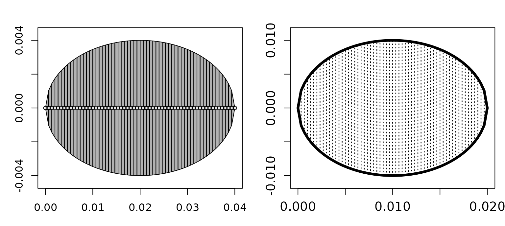

Building Scatterers
Source:vignettes/building-scatterers/building-scatterers.Rmd
building-scatterers.RmdOverview
A shape records geometry. A scatterer assigns that geometry a physical meaning by adding material properties, orientation, components, and metadata. Most models operate on a scatterer rather than on a bare shape.
Scatterers are S4 objects derived from the Scatterer
class. Their subclasses represent different interface physics and
component structures. Choose a class from what the target contains
physically, not only from its outline.
Use Material Properties to prepare densities, sound speeds, contrasts, and elastic properties before attaching them to a shape.
Select a class in the figure to open its reference page.
ELA and CSC are parent classes that organize
related targets. They are not separate constructor choices.
Choosing a scatterer class
| Constructor and class | Physical representation |
|---|---|
fls_generate(),
FLS
|
A single fluid-like body |
gas_generate(),
GAS
|
A gas-filled body or inclusion |
sbf_generate(),
SBF
|
A fish-like body and swimbladder |
bbf_generate(),
BBF
|
A fluid-like body and elastic backbone |
ess_generate(),
ESS
|
An elastic shell enclosing a fluid |
cal_generate(),
CAL
|
A solid calibration sphere |
The same geometry can support more than one physical representation. A sphere, for example, can be used for a gas inclusion, an elastic shell, or a calibration target. Its scatterer class determines which materials, interfaces, and models are relevant.
Single-component targets
The recommended workflow is to construct the geometry first and pass
the resulting Shape through shape. Material
properties may be supplied as absolute values or as contrasts, depending
on the constructor and available data:
library(acousticTS)
body_shape <- prolate_spheroid(
length_body = 0.04,
radius_body = 0.004,
n_segments = 60
)
fls_obj <- fls_generate(
shape = body_shape,
density_body = 1045,
sound_speed_body = 1520,
ID = "fluid-like target"
)
gas_obj <- gas_generate(
shape = sphere(radius_body = 0.01, n_segments = 60),
g_fluid = 0.0012,
h_fluid = 0.22,
ID = "gas target"
)Plot the returned objects rather than assuming the stored geometry matches the intended target:
old_par <- par(no.readonly = TRUE)
par(mfrow = c(1, 2), mar = c(3, 3, 2.2, 0.8))
plot(fls_obj, type = "shape", main = "FLS object")
plot(gas_obj, type = "shape", main = "GAS object")
Two shapes after being assigned different physical target types.
par(old_par)Composite targets
Composite constructors keep acoustically distinct components separate. Build each component as its own shape, then pass it through the corresponding named argument:
body_shape <- arbitrary(
x_body = c(0, 0.04, 0.08, 0.12),
zU_body = c(0, 0.003, 0.004, 0),
zL_body = c(0, -0.003, -0.004, 0)
)
bladder_shape <- arbitrary(
x_bladder = c(0.03, 0.06, 0.09),
zU_bladder = c(0, 0.0016, 0),
zL_bladder = c(0, -0.0016, 0)
)
sbf_obj <- sbf_generate(
body_shape = body_shape,
bladder_shape = bladder_shape,
density_body = 1040,
sound_speed_body = 1500,
density_bladder = 1.2,
sound_speed_bladder = 340,
ID = "body and bladder"
)An SBF retains body and
bladder components. A BBF similarly retains a
body and backbone. The latter requires a
cylindrical backbone with its own density and longitudinal and
transverse sound speeds:
bbf_obj <- bbf_generate(
body_shape = body_shape,
backbone_shape = cylinder(
length_body = 0.06,
radius_body = 0.0008,
n_segments = 40
),
density_body = 1070,
sound_speed_body = 1570,
density_backbone = 1900,
sound_speed_longitudinal_backbone = 3500,
sound_speed_transversal_backbone = 1700
)Use offset_component()
after construction if an internal component needs a deliberate
positional adjustment.
Shells and calibration targets
ESS and CAL encode more specialized
physics. An elastic shell requires shell and enclosed-fluid properties.
A calibration target uses a supported material preset or explicitly
supplied elastic properties:
ess_obj <- ess_generate(
shape = sphere(radius_body = 0.03, n_segments = 80),
shell_thickness = 0.001,
density_shell = 1050,
sound_speed_shell = 2350,
density_fluid = 1030,
sound_speed_fluid = 1500,
E = 3.5e9,
nu = 0.34
)
cal_obj <- cal_generate(
material = "WC",
diameter = 38.1e-3,
n_segments = 120
)Consult the constructor reference pages before substituting materials or elastic constants. These inputs define the boundary response, not merely object metadata.
Input conventions
The public constructors follow these conventions:
- Build geometry with a
Shapeconstructor and pass the object throughshape,body_shape,bladder_shape, orbackbone_shape. - Supply geometry in meters and orientation in radians. Older unit arguments remain for compatibility, but non-SI values are deprecated and ignored.
- For a given component property, use either the contrast form
(
g_*,h_*) or the absolute form (density_*,sound_speed_*). - Use
IDfor a stable target identifier. - Keep components separate when their interfaces matter acoustically.
Raw coordinate inputs remain available in some constructors for older
code. Character labels that ask a scatterer constructor to generate a
shape are also retained for compatibility. New workflows should use
pre-built Shape objects so geometry can be inspected before
physical properties are added.
Check the object
Use extract()
and plot() to
verify the object before running a model:
class(sbf_obj)## [1] "SBF"
## attr(,"package")
## [1] "acousticTS"## [1] "rpos" "sound_speed" "density" "g" "h"
## [6] "theta"## [1] "rpos" "sound_speed" "density" "g" "h"
## [6] "theta"
extract(sbf_obj, "metadata")## $ID
## [1] "body and bladder"Confirm the following:
- the S4 class matches the intended physical target
- component geometry and relative placement are plausible
- materials or contrasts use the intended reference medium
- orientation and units are correct
- all interfaces needed by the model remain distinct
Continue with Running Models and Choosing a Model.